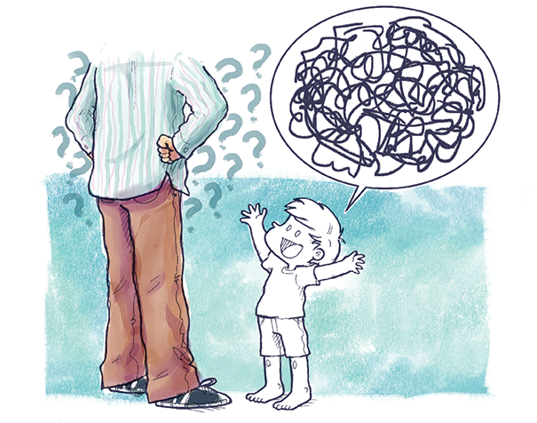

Mas, quando falava, embaralhava palavras,
e suas ideias não soavam direito.
Seus sons saíam bagunçados.
Suas ideias, emaranhadas.
E alguns adultos,
sem entender coisa
nenhuma, achavam
graça do seu falatório.

"Descrição de imagem: Um adulto aparece de costas, dos ombros para baixo, com as mãos na cintura. Ele veste camisa listrada e calça marrom. É cercado por muitas interrogações. Thomas está na sua frente, todo em branco, sorrindo com os braços para cima.
Há um balão de fala acima de Thomas e dentro do bação há um grande emaranhado de riscos pretos. Fim da descrição"